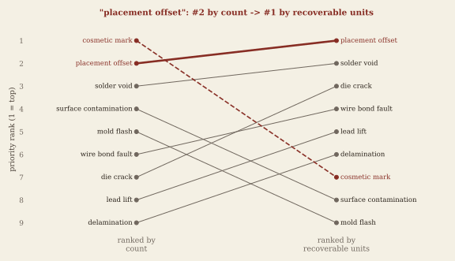
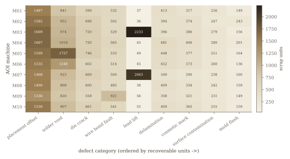
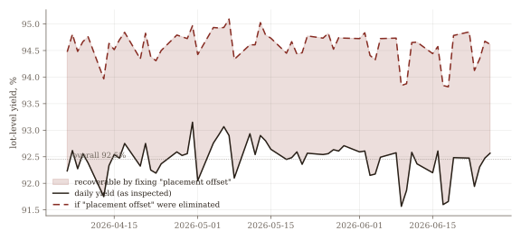

Automated optical inspection flags thousands of units a day. Rank the defect categories by how loud they are — raw count — and you send the meeting after the wrong problem. Rank them by recoverable units — the yield a fix actually gives back — and the priority list reorders. This is that reorder, from raw records to a table a production meeting can act on.
Method demonstrated on a simulated inspection log — 720,000 units generated with a fixed seed (generator committed), reproducing the phenomena of a semiconductor assembly & test (OSAT) production environment with no production data. The Pareto discipline is the point, and it transfers to a real log with the same columns.
The inspection log is one row per flagged unit — a clean pass generates no row — across
60 days, 2,400 lots (a fixed 300 units each), 10 AOI machines, and 9 defect categories. Overall
yield is 92.5%: of 720,000 units inspected, 133,444 were flagged (18.5%) and 54,358 were
ultimately scrapped. Each flagged unit carries a recoverable flag — True
if it was salvaged by rework or retest (no yield loss), False if it was scrapped. The
reflex in a production meeting is to open the count ranking and start at the top. That ranking is
§2.
Sort the categories by flag count and the list is dominated by high-volume cosmetic defects: cosmetic mark (35,872), then placement offset (21,379), surface contamination (17,366), solder void (17,701), mold flash (13,794). Four of the top five are categories where most flags are salvaged — they are loud on the floor and cheap to yield. Counting treats a salvaged cosmetic flag and a scrapped die crack as the same event. They are not.
Define the metric that matters: recoverable units — the units a driver scraps, which is exactly the yield you would recover by eliminating its root cause. Re-rank on it and the top of the list changes. Placement offset rises from 2nd to 1st; die crack, only 7th by count, climbs to 3rd because 95% of its flags scrap; and the loudest category, cosmetic mark, falls from 1st to 7th. Surface contamination and mold flash — 4th and 5th by count — drop to 8th and 9th.
| Defect category | Rank by count | Rank by recov. units | Flags | Recoverable units | Scrap rate |
|---|---|---|---|---|---|
| placement offset | 2 | 1 | 21,379 | 15,363 | 71.9% |
| solder void | 3 | 2 | 17,701 | 10,278 | 58.1% |
| die crack | 7 | 3 | 6,918 | 6,571 | 95.0% |
| wire bond fault | 6 | 4 | 10,190 | 5,622 | 55.2% |
| lead lift | 8 | 5 | 5,281 | 4,657 | 88.2% |
| delamination | 9 | 6 | 4,943 | 4,109 | 83.1% |
| cosmetic mark | 1 | 7 | 35,872 | 3,543 | 9.9% |
| surface contamination | 4 | 8 | 17,366 | 2,539 | 14.6% |
| mold flash | 5 | 9 | 13,794 | 1,676 | 12.2% |

The gap is large, not marginal: fixing placement offset alone recovers 2.13 yield points, more than four times what fixing cosmetic mark would (0.49). Fixing every driver's root cause would recover 54,358 units — 7.55 yield points — but the meeting has finite attention, and the recoverable-units ranking spends it where the yield is.
A ranking tells the meeting what to fix; the machine breakdown tells it how. The two top-of-list drivers need opposite responses. Placement offset — the #1 lever — is spread across the line: no single machine carries more than 10.9% of its scrap, so it is a systemic process issue, fixed at the recipe/setup level, not by pulling a tool. Lead lift — a rare category, only 5,281 flags — is the opposite: 92.2% of it lands on just two machines (M03 and M07), so it is localized and fixed by containing those two stations. Same heatmap, two verdicts.


The point of the reanalysis is what it changes in the room:
— The priority list is sorted by recoverable units, not count. The action item is
placement offset (a process/setup fix), not the cosmetic category that tops the count board and
mostly reworks out anyway.
— Loud-but-cheap categories are triaged, not chased. Cosmetic mark, surface contamination
and mold flash are high-count and high-salvage; they belong in a rework-capacity conversation, not
a yield-recovery one.
— Systemic and localized drivers are routed differently. Placement offset goes to process
engineering; lead lift goes to containment on M03 and M07. The count ranking would have buried
both under the cosmetic noise.
The loudest defect is the easiest to see and the easiest to over-fund. Ranking by the yield you can actually recover is the discipline that points the meeting at the real lever.